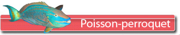
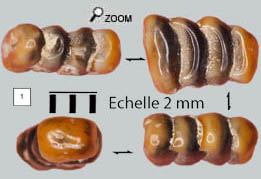
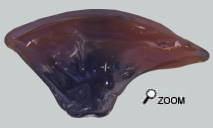

La machine à broyer...

 Les poissons-perroquets (environ 83 espèces actuelles) sont des animaux à l’écologie assez spécialisée. A de rares exceptions près, ces poissons sont des brouteurs d’algues, et d’invertébrés colonisateurs. Ils se nourrissent souvent d’algues microscopiques, colonisant les squelettes de coraux. Et c’est là qu’intervient un appareil dentaire broyeur redoutable capable de venir à bout des structures calcaires dures des coraux. Les dents ont tendance à fusionner pour constituer des meules complexes. Une fois broyé, le minéral de corail constitue une pâte de calcaire qui est rejetée et qui contribue aux dépôts sédimentaires sous-marins. Les squelettes de coraux ne sont pas rares dans les faluns, par contre les restes de scaridés sont quasi-inexistants. C’est très curieux. Il est vraisemblable que les poissons perroquets devaient subir la concurrence des trigonodons, poissons très courants dans les faluns et d’écologie comparable. Les poissons-perroquets (environ 83 espèces actuelles) sont des animaux à l’écologie assez spécialisée. A de rares exceptions près, ces poissons sont des brouteurs d’algues, et d’invertébrés colonisateurs. Ils se nourrissent souvent d’algues microscopiques, colonisant les squelettes de coraux. Et c’est là qu’intervient un appareil dentaire broyeur redoutable capable de venir à bout des structures calcaires dures des coraux. Les dents ont tendance à fusionner pour constituer des meules complexes. Une fois broyé, le minéral de corail constitue une pâte de calcaire qui est rejetée et qui contribue aux dépôts sédimentaires sous-marins. Les squelettes de coraux ne sont pas rares dans les faluns, par contre les restes de scaridés sont quasi-inexistants. C’est très curieux. Il est vraisemblable que les poissons perroquets devaient subir la concurrence des trigonodons, poissons très courants dans les faluns et d’écologie comparable.
File dentaire...
Chez tous les genres de scaridés, les dents supérieures germent à partir de la région antérieure de l’os pharyngien puis migrent vers l’arrière.
 Les dents sont dressées et organisées en rangées. Il peut y avoir une à trois rangées de dents sur chaque os légèrement imbriquées les unes dans les autres. Sur le fossile de gauche, chaque dent montre une dépression sur l’un des côtés destiné à l’engrènement avec une dent de la file adjacente. Cette organisation est exclusive au groupe des scaridés. Le seul taxon qui présente aussi ce système dentaire est le genre Pseudodax (et son ancêtre probable Trigonodon). Mais les dents pharyngiennes supérieures de Trigonodon sont bien identifiées et sont très fines.  La forme ovoïde des dents montrées ici est donc assez probante et on peut attribuer ce fossile à un scaridé. Et puis un autre type de dent (vue de droite). Je n'ai jamais vu de dents isolées comme celle-ci dans des publications mais je pense qu'il s'agit bien d'une dent de poisson-perroquet avec une surface occlusale convexe et broyeuse (qui montre un début d'usure). Ça correspond assez bien aux représentations des palais dentaires de scaridés.
On a beaucoup parlé de poissons-perroquets dans les faluns mais on a finalement peu de fossiles certifiés de cette famille. |